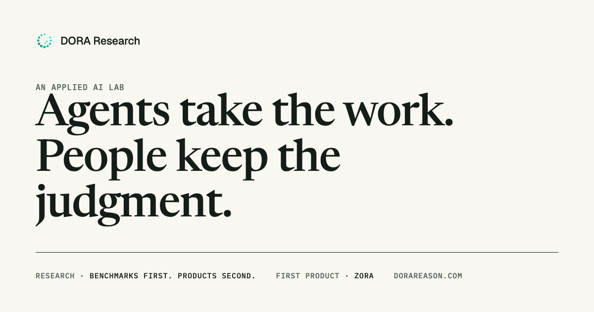
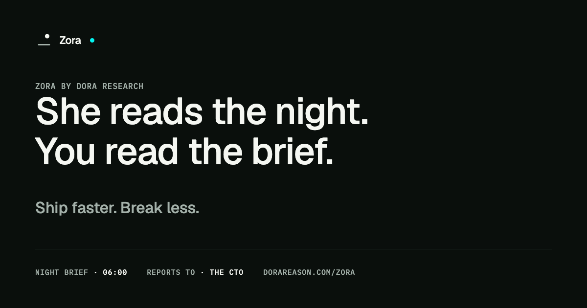

The lab
DORA Research
Publishes research. Holds the family mark. Signs every product page. Speaks as "we".
DORA Research · Brand standards · v2.0 · September 2026
An applied AI lab and its first product. Two grounds, one company: Paper for the lab, Night for Zora.
Contents
Part A · The lab · 01 The thesis Decided
DORA Research is an applied AI lab. We build agents that take over specific operational work in engineering organizations, and we say plainly which work that is. People keep judgment and accountability; the agents keep the record, the watch, and the follow-through. Our research, benchmarks, and frameworks are published before they become products.
The lab
DORA Research
Publishes research. Holds the family mark. Signs every product page. Speaks as "we".
The first product
Zora
A technical director and chief of staff who reports to the CTO. Speaks as "I". She, never it.
The promise
Ship faster. Break less.
Delivery is the promise. Memory is the mechanism, never what she is for.
Part A · 02 What changed in version 2
| Subject | Version 1 | Version 2 | Source |
|---|---|---|---|
| The company | The company behind Zora | An applied AI lab with a family of products. Zora is the first. | Q10, Q16 |
| What Zora is | A second brain for work | A technical director and chief of staff reporting to the CTO | Q9 |
| The promise | Organizational memory | Ship faster, break less. Memory is the mechanism. | Q2 |
| The person | Product and technology teams | The CTO or VP Engineering, buyer and daily user | Q5 |
| The central scene | Can Atlas still ship Friday? | 06:00. A CTO reads the night brief. | Q6, Q14 |
| Voice | Calm, precise, credible | A four-part brief in a technical director's manner. Zora is she. | Q7, Q8, Q15 |
| Visual system | One register: Porcelain | Two registers: Paper for the lab, Night for Zora | Q13 |
| The mark | The company mark, decorative | The lab's mark: thirteen specialists, one seat open. Products get their own. | Q11 |
| Research | Not addressed | Published before it ships. First framework: The Accountability Line v0.1. | Q4, Q16 |
Part A · 03 Architecture Decided
DORA Research is the parent. Every product is a named specialist with its own mark, its own register, and one job. Neither mark ever stands in for the other.
The lab
Publishes research. Holds the family mark. Signs every product page.
First product
Technical director and chief of staff to the CTO. Night register. Mark proposed on page 26.
Next specialists
Each takes the swarm's open seat with a different chord. Each gets a name, a register, and a published framework before launch.
| Write | Never | Where |
|---|---|---|
| DORA Research | Dora Research · DORA research · D.O.R.A. | Masthead, footer, legal, bylines. First mention: an applied AI lab. |
| Zora | ZORA · zora · the Zora · Zora AI · it | The subject of her sentences: Zora reads, Zora found, Zora recommends. |
| Zora by DORA Research | DORA's Zora · Zora from DORA | The attribution line on every product surface. |
| a technical director who reports to the CTO | copilot · assistant · second brain · teammate | What Zora is, in one clause. The reporting line is the positioning. |
Part A · 04 The name Decided
DORA
Throughput and stability
From the DORA metrics popularized by Google's DevOps Research and Assessment team: two dimensions of software delivery. The lab adds a third measure of its own, quality, and judges its products by all three.
Research
Published before it ships
Applied research in the ElevenLabs sense: benchmarks and frameworks first, then the product that proves them. Research is upstream of everything the lab ships.
Zora
The ship's mind
After the sentient system in Star Trek Discovery that keeps a critical vessel and its crew alive. The idea travels. The imagery does not. Nothing in the brand is science fiction.
Say the words
AI and agents, plainly. Never copilot, assistant, or chatbot. Never "our AI" or "the system" when the subject is Zora.
Part A · 05 What the lab is measured on Decided
Throughput
How fast the organization ships
Lead time and deployment frequency, in the customer's own numbers, never the lab's.
Stability
How safely it ships
Change failure rate and time to restore. The night brief exists to move these.
Quality
Whether it was right
Decisions that hold, incidents that do not recur, briefs a CTO would forward.
Two enemies
The status meeting that reconstructs last week.
The past you should already have.
Being caught off guard.
The future you should have seen.
One feeling
Calm and in control.
It is 06:04. The CTO has finished the brief and knows exactly which question to ask first. That sentence is the test for every screen, every line, and every second of film.
Part A · 06 The division of labor Decided
Agents take
People keep
The lab publishes where the line sits and moves it only on evidence. That is the research program, the brand position, and Zora's operating contract in one sentence.
Part A · 07 The lab's mark Decided · geometry unchanged
A swarm of thirteen agents, each with one job, in orbit around a center that is not drawn. Dot size grows along the orbit so the swarm reads as motion even when still. The gradient runs from the heaviest dots to the lightest, so the brightest color lands beside the opening. The open seat at the upper right is where the next specialist stands.
| Dot | cx | cy | r | Dot | cx | cy | r |
|---|---|---|---|---|---|---|---|
| 1 | 20.50 | 12.00 | 1.40 | 8 | 7.75 | 19.36 | 1.80 |
| 2 | 19.36 | 7.75 | 1.20 | 9 | 12.00 | 20.50 | 1.70 |
| 3 | 12.00 | 3.50 | 1.10 | 10 | 16.25 | 19.36 | 1.60 |
| 4 | 7.75 | 4.64 | 1.30 | 11 | 19.36 | 16.25 | 1.50 |
| 5 | 4.64 | 7.75 | 1.50 | 12 | 15.00 | 13.00 | 1.00 |
| 6 | 3.50 | 12.00 | 1.60 | 13 | 13.00 | 15.50 | 0.90 |
| 7 | 4.64 | 16.25 | 1.70 |
24-unit frame · ring 12,12 r 8.5 · seats every 30° counterclockwise from dot 1 · open seat 16.25, 4.64 (60°) · gradient 3,21 → 21,3 · #3D8B68 → #03F5F2
Part A · 08 The mark: variants and rules Proposed
Gradient · masthead, favicon, covers
Ink · running lockups on paper
Paper · on Night
Favicon tile · Warm White
Part A · 09 The mark: misuse Decided
The only permitted changes are the three variants and uniform scaling.
Part A · 10 Paper register: palette Proposed
Ratios are WCAG 2 contrast against Paper. The one dark section on a lab page is painted Night Floor #0A0F0C and uses the Night tokens; Living Green Deep on Night Floor measures 2.4 and is not used there.
Part A · 11 Paper register: type Proposed
Part A · 12 Paper register: five principles Proposed
Never on paper: a chat input or chat bubble, a sparkle, an avatar, copilot framing, italic display as decoration, motion on the mark, purple, orange, a second green, any gradient on a surface, stock photography, an icon set.
Part A · 13 Research Decided
Every product begins as a question, becomes a benchmark, is shaped by a framework, and only then becomes something a CTO can use. Each step is published with an ID, a version, and its evidence.
1 · Question
What work in an engineering organization should an agent take?
2 · Benchmark
How often was the agent's call the one the person made?
3 · Framework
The Accountability Line, v0.1
4 · Product
Zora, advising at Proposed today, acting at Reported within a year
| Type | ID form | What it commits to |
|---|---|---|
| Framework | DR-FW-### | A published position with tests. Versioned; changes are decisions with names on them. |
| Benchmark | DR-BM-### | A measured result with sample size, method, and the data or a reason it is withheld. |
| Note | DR-NT-### | A short finding or a correction. Dated, never silently edited. |
| Brief | customer's own | Zora's daily output. Never published by the lab; cited only with the customer's consent. |
Part A · 14 DR-FW-001 · The Accountability Line · v0.1 Proposed · draft for review
Four tiers by three questions: how much can go wrong if the agent is wrong, how cheaply it can be undone, and who is answerable afterward. A task is promoted toward Silent and demoted toward Reserved; the framework never says up or down.
Tier 1
Silent
Work an agent does on its own and does not need to mention. Checked in aggregate, not item by item.
Test
If the agent gets this wrong, does anyone need to be told, and does the next run overwrite the mistake? No and yes.
Tier 2
Reported
Done on its own, then told to a named person with the evidence and the undo path. A rule a person wrote.
Test
Can a named person with ordinary access undo this in minutes, and is the agent applying a rule that person wrote? Both yes.
Tier 3
Proposed
The agent prepares the decision and a named person makes it: evidence, options, cost to undo, who can say yes.
Test
Does undoing this take a rollback, a customer notice, or another team's time, or does it change what a person is responsible for? Either yes.
Tier 4
Reserved
Stays with people. The cost lands on someone who did not decide, or the answer depends on what no system records.
Test
Would you be comfortable telling a customer, an employee, or an auditor that the agent decided? No.
Part A · 15 DR-FW-001 · principles and statuses Proposed
Status · Held
The tier is right but the safety net is not there yet. The task waits.
Status · Shadow
The agent logs what it would have done beside what the person did. The disagreement rate is the promotion evidence.
Status · Live
The action runs at its tier and appears in the next brief with the rule that fired and who wrote it. Demotion is one message.
Zora today
The record is Silent. Every recommendation is Proposed. She names the decider and does not decide.
Part A · 16 Voice of the lab Proposed
| Where | Line |
|---|---|
| Lab hero | Agents take the work. People keep the judgment. |
| Research | Benchmarks first. Products second. |
| The mark's caption | Thirteen agents. One job each. |
| Delegation | She takes the task. You keep the call. |
| Beta invitation | Give Zora one night. Read the brief at 06:00. |
| Footer | DORA Research. An applied AI lab. |
Part B · Zora · 17 Who Zora is Decided
Zora is an AI agent: a technical director who reports to the CTO. Overnight she reads what Linear, GitHub, Datadog, PagerDuty, and Slack recorded, connects it to what the team decided, and finishes the brief by 06:00. Today she advises with evidence. Within a year she will hold a deploy, open a ticket, or page the on-call, on the CTO's authority.
Title
Technical director and chief of staff
Depth across every discipline in the room, plus the executive's memory of every commitment.
Reports to
The CTO or VP Engineering
One accountable person, who is also the daily user.
Mechanism
Memory
She connects the ticket to the decision to the deploy so the brief can say why. How she works, not what she is for.
Presence
A name, a voice, a 6 px dot
Never a face, an avatar, a robot, or an orb. Zora is she, the subject of her sentences.
Zora, in her own words
I am Zora. I report to the CTO. Overnight I read what the organization produced: the deploys, the alerts, the tickets, the threads. At 06:00 you get a finished brief: who was affected, what led to it, what we change, and where else it applies. Then I stay in the room for the questions. I will tell you what I know and what I do not.
Part B · 18 Three questions, two enemies, one feeling Decided
Last night
What happened last night?
Who was affected, how it was mitigated, and what is still open.
Projects
Where are we with this project, and why?
The decision, the dependency, and the reason, with the record attached.
Risk
Where are we most at risk?
Where the same conditions exist, what to do there, and who decides.
Two enemies
The status meeting that reconstructs last week.
The past you should already have. The brief exists so the meeting does not have to.
Being caught off guard.
The future you should have seen. The conditions were there on Tuesday; the brief says so on Tuesday.
One feeling
It is 06:04. The CTO has finished the brief. They are calm and in control, and they know exactly which question to ask first.
If the reader cannot feel it, the work is not finished.
Part B · 19 Zora's voice Decided · structure
The voice is modeled on a real technical director the founder worked with. He rose from principal engineer, could talk to DevOps, SRE, architects, and senior developers in their own dialects, and answered "what happened last night?" the same way every time. That structure is now Zora's.
01
Impact and outcome
Who was affected, how it was mitigated, and what is still open. Before anything else.
02
Conditions
The circumstances that let it happen. No blame, no speculation. Unknowns marked as unknown.
03
What we change
How the organization operates differently so it does not recur. Sized to this company's constraints.
04
Where else
Other places the same conditions exist, and what to do there. Then she names the decider.
Part B · 20 The night brief · specimen, demo data Proposed
Night brief · 2026-09-10 · 06:00 · 8 records
EU order writes failed for 14 minutes overnight. Mitigated at 02:55, and the same pattern is queued for tonight.
Between 02:41 and 02:55 every write to the orders table in eu-west-1 was blocked. Reads carried on, so the service-wide error rate peaked at 34% while checkout writes timed out at 30 seconds. Around 180 checkout attempts failed. About 140 were retried by the client and completed by 03:10; the remaining 40 are listed in ORD-1187 for reconciliation this morning. No data was lost. Whether any customer was charged without an order, or charged again on retry, is unverified: the payment provider is not among my sources. PagerDuty paged Priya Nair at 02:44; she found the blocking index build at 02:54 and canceled it, and the service recovered within the minute.
The 02:30 unattended deploy of orders-service 2.31.0 rolled the image out first and started the migration job at 02:41. Migration 0187 adds an index on orders.customer_id. It was written without CONCURRENTLY, so Postgres held a SHARE lock on orders for as long as the build ran: every insert, update, and delete waited, and reads went through. On staging that table has 40,000 rows and the index built in under a second. In production it has 61 million rows, and the build held the lock for 14 minutes before Priya canceled it. The migration checklist does not mention lock behavior on large tables, and CI has no step that flags non-concurrent index creation.
Part B · 21 The night brief · continued Proposed
I recommend three changes, all small. First, a CI check that fails any migration adding an index without CONCURRENTLY to a table it did not create, or running a CONCURRENTLY build inside a transaction block, which Postgres refuses. No threshold and no data feed; it is a regex and about ten lines. Second, one line added to the migration checklist: state the production row count and the expected lock. Third, any migration touching orders, customers, or payments runs in the 10:00 attended window with the author present. None of this needs new budget or new tooling. I have not opened tickets or changed anything; who owns each of these is your call.
The same conditions exist in two places. Migration 0043 in billing-service, merged yesterday and queued for tonight's 02:30 window, builds an index on invoices.account_id without CONCURRENTLY. That table has 22 million rows in production, so tonight would look like last night. I would hold it or move it to the attended window; that is your decision, not mine. Second, the analytics repo runs its own migrations through Airflow at 01:00 and never passes through orders CI. Two reviewers approved 0187 and would have approved 0043; the checklist is the exposure, not any one person.
Questions
Part B · 22 Voice rules and vocabulary Proposed
Use
Zora, she, her brief · the night brief · AI, agents · an applied AI lab · impact, conditions, what we change, where else · record, evidence, source · owner, decision, deadline · at risk, exposure · hold, mitigated, rollback, on-call · ship faster, break less · throughput, stability, quality · reports to the CTO · judgment, accountability, sign-off · Linear, GitHub, Datadog, PagerDuty, Slack · 24-hour times
Avoid
copilot, assistant, chatbot, bot, avatar · AI teammate, digital employee · second brain, knowledge base, single pane of glass, command center · insights, actionable, real-time, surface as a verb · AI-powered, intelligent, smart, magic, seamless, never sleeps · unlock, empower, leverage, 10x, revolutionary · root cause · we think, probably, likely · thinking…, generating…, chat with your data · it, for Zora · am/pm times · em dashes · exclamation marks · emoji
Part B · 23 Before and after Proposed
| Before | After |
|---|---|
| Supercharge your engineering team with AI-powered insights! Our intelligent copilot analyzes millions of data points across your entire stack to surface what matters, so you can ship 10x faster. | Zora reads Linear, GitHub, Datadog, and Slack overnight. At 06:00 she tells you who was affected, why, and what changes. Ship faster. Break less. |
| Never miss a thing. Your second brain remembers everything so you don't have to. | Memory is how she works, not what she is for. Zora connects the ticket to the decision to the deploy so the brief can say why. |
| Autonomous AI agents that take action across your stack: automatically fix issues, close tickets, and keep your team in flow, with no human in the loop required. | Today she advises with evidence. Within a year she will hold a deploy, open a ticket, or page the on-call, on your authority and with your sign-off. We will say which, and when, before she does it. |
| Start your free trial today and unlock the full potential of your engineering org. No credit card required. Join thousands of teams already transforming how they work! | The beta starts with one night. Connect Linear, GitHub, Datadog, PagerDuty, and Slack in the afternoon; the brief is on your desk at 06:00. Zora is working with a small number of CTOs, and we will tell you plainly if she is not ready for your setup. |
Part B · 24 Zora's mark Proposed
Derived on the ring. Disc in the open seat at 60°; chord between seats 210° and 330°, dots 7 and 11. The swarm is shown for reference only.
Derived on the lab's ring and never redrawing it. One flat disc stands in the swarm's open seat. One chord joins two seats on the ring and is the line of evidence she stands on. The figure is then placed in the frame by a fixed offset every product mark shares. Never center the disc; the 60° offset is the mark.
| Disc | cx 16.25 · cy 6.64 · r 3.0 |
| Chord | x 4.64 → 19.36 · y 18.25 1.8 thick · caps r 0.9 |
| Ratios | Chord 2.75× the disc diameter, never under 2.4×. Thickness 0.3×, never more. |
| Placement | Derive at the ring, translate +2 in y. |
Part B · 25 Zora's mark: rules and family Proposed
16
24
48
120
The family rule
A DORA product mark is one flat disc, radius 3.0, in the swarm's open seat, plus straight chords of the swarm's ring, 1.8 thick with round caps, joining ring seats. Products differ only in which chords they draw. No second disc, no arc, no ring, no color on the disc. Every figure is placed in the 24 frame by the same fixed offset. Zora's figure is the level chord. The next specialist might join 90° and 210°, or draw two chords. It will never close the ring.
Part B · 26 Night register: palette Proposed
Part B · 27 Night register: type and motion Proposed
Motion
Part B · 28 Night register: five principles Proposed
Layout: the strip is always present at first paint. Brief in columns 3 to 9, evidence rail in 10 to 12, plate behind all 12. Radius 0 on plates and panels, 4 px on controls. Depth is a 1 px Line and one luminance step.
Part B · 29 Film Decided · direction Open · plates
SpaceX points the camera at the rocket. Waymo points it at the car in traffic. DORA points it at a CTO at 06:00, reading a brief that was written while they slept. Person, brief, systems, consequence, in that order. Engineering documentary: real machine, real scale, cut not looped, licensed masters only.
The CTO, coffee, a laptop already open. The brief is on screen before they sit down. Nothing is typed.
Available light, tungsten. Handheld, close.
The night brief at real scale on a real screen. Four numbered parts. The reader's eyes move; the interface does not.
Macro on the display, no screen replacement.
A p99 graph climbing. A page arriving on a phone on a nightstand. A terminal holding a lock. Nobody in the room.
Documentary inserts, graded to Night Floor.
Four people and a wall of evidence. The conditions are on the wall. No name is on the wall.
Wide, still, observational. Cut before anyone performs.
Back · 30 Applications Shipped · 2026-09-14
| Site | dorareason.com. The lab leads: Company and Research on Paper, Zora on Night on her own page. One Night section on the company page hands off to the product. |
| Title tags | DORA Research · An applied AI lab Research · DORA Research Zora · She reads the night. You read the brief. |
| Navigation | Research · Zora · Company · Request private beta |
| Footer | DORA Research. An applied AI lab. · © 2026 |
| Favicon | The swarm on a Warm White tile. Zora's page may carry her own once the mark is adopted. |
| Beta | hello@dorareason.com, subject "Zora private beta", until a form exists. |


Social cards · 1200 × 630 · the lab line on Paper, Zora's line on Night
Back · 31 Governance Decided
| Decided | Confirmed by the founder in the interview of 13 September 2026. Changing it is a new decision, logged with a reason. |
| Proposed | Drafted for this version and not yet adopted. Build to it; expect amendments. |
| Open | A known gap or an unanswered question, listed so it is not forgotten. |
Precedence
Open items
Superseded, do not regress
A prediction-market operator with AI operations underneath. Secure AI teammates for infrastructure operations. A consumer personal-memory organizer. A second brain for work with the lab as a byline. The thirteen-dot mark did not change through any of them and does not change now.
Agents take the work. People keep the judgment.